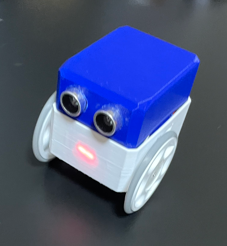
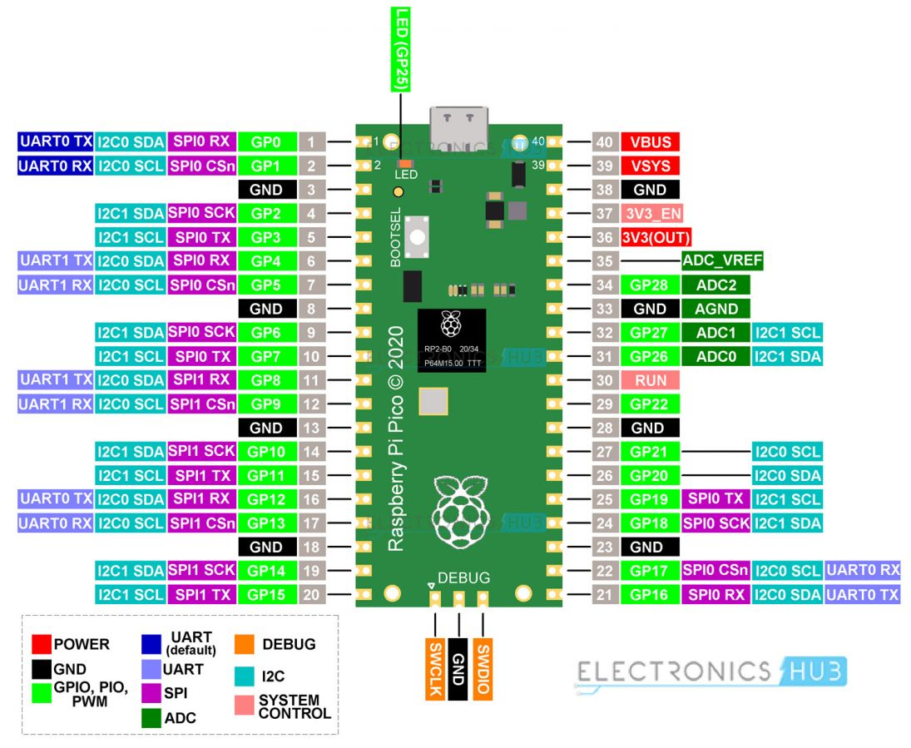
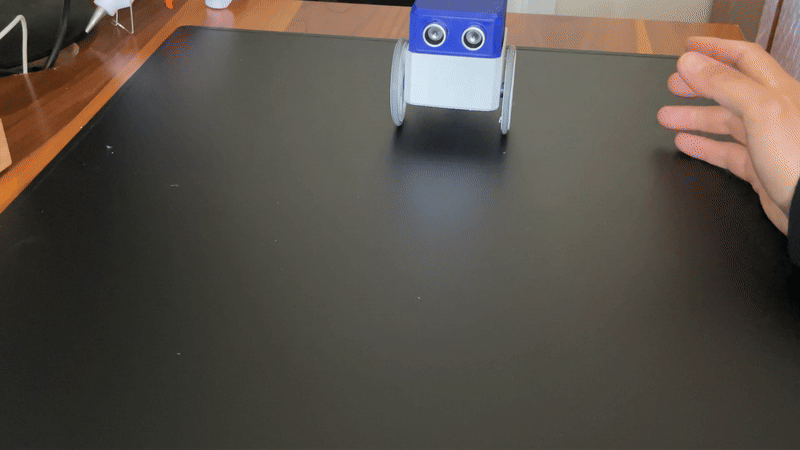

What You Need
Project Overview
Here is an image of the Pico Otto Robot Car you will build in this module:

Pico Otto Robot CarStep-by-Step Path
🔧 Step 1: Assemble the Robot
Use the 3D-printed parts to assemble the chassis of the robot car. Attach the servo motors, battery holder, and Raspberry Pi Pico to the chassis. Watch the assembly tutorial video below for detailed instructions:
🔌 Step 2: Wiring Diagram
Follow the wiring diagram below to connect all components:
 Wiring Diagram
Wiring Diagram

Pico Pinout💻 Step 3: Program the Robot
Write a MicroPython program to control the robot's movement using PWM signals for the servo motors. Use the knowledge from previous modules to integrate sensors and add functionality.
from machine import Pin, PWM
import time
# Ultrasonic Sensor Pins
trig = Pin(2, Pin.OUT)
echo = Pin(3, Pin.IN)
# Buzzer
buzzer = Pin(4, Pin.OUT)
# Servo Motors (Continuous Rotation)
left_servo = PWM(Pin(14))
right_servo = PWM(Pin(13))
left_servo.freq(50)
right_servo.freq(50)
# 7-Segment Display GP16–GP22(for reduce the power consumption we only use B,C,G segments)
segment_pins = [
Pin(16, Pin.OUT), # A
Pin(17, Pin.OUT), # B
Pin(18, Pin.OUT), # C
Pin(19, Pin.OUT), # D
Pin(20, Pin.OUT), # E
Pin(21, Pin.OUT), # F
Pin(22, Pin.OUT) # G
]
# Segment bit patterns for common characters
segment_map = {
'+': [0, 1, 1, 0, 0, 0, 1],
'-': [0, 1, 1, 0, 0, 0, 0],
}
# Function to measure distance
def measure_distance():
trig.low()
time.sleep_us(2)
trig.high()
time.sleep_us(10)
trig.low()
while echo.value() == 0:
pulse_start = time.ticks_us()
while echo.value() == 1:
pulse_end = time.ticks_us()
duration = time.ticks_diff(pulse_end, pulse_start)
distance = (duration * 0.0343) / 2 # in cm
return distance
# Servo control functions
def stop():
left_servo.duty_u16(5000)
right_servo.duty_u16(5000)
#8000(full forward) 5500(slow forward)
def forward():
left_servo.duty_u16(5500)
right_servo.duty_u16(4300)
#3000(full backward) 4300(slow backward)
def backward():
left_servo.duty_u16(4300)
right_servo.duty_u16(5500)
def turn_left():
left_servo.duty_u16(4300)
right_servo.duty_u16(4300)
def turn_right():
left_servo.duty_u16(5500)
right_servo.duty_u16(5500)
def display_char(char):
pattern = segment_map.get(char.upper(), [0] * 7)
for pin, val in zip(segment_pins, pattern):
pin.value(val)
# Main loop
try:
while True:
display_char('-')
distance = measure_distance()
if distance == -1:
print("Out of range or no echo")
else:
print("Distance:", distance, "cm")
if distance < 10:
stop()
buzzer.high()
display_char('+')
time.sleep(0.5)
# Backup and turn logic
backward()
time.sleep(1)
turn_right()
time.sleep(1)
stop()
elif distance < 20:
display_char('-')
buzzer.high()
forward()
time.sleep(0.2)
buzzer.low()
else:
buzzer.low()
forward()
display_char('-')
time.sleep(0.1)
except KeyboardInterrupt:
stop()
buzzer.low()
power_led.low()
print("Program stopped.")🧪 Step 4: Test and Debug
Test the robot's movement and functionality. Debug any issues with the assembly or programming. Watch the demo below to see the robot in action:

Complete Tutorial
Watch the complete tutorial video below to see the Pico Otto Robot Car in action:
Quick Recap
- ✅ Assembled the robot using 3D-printed parts
- ✅ Programmed the robot to move using PWM signals
- ✅ Tested and debugged the robot's functionality